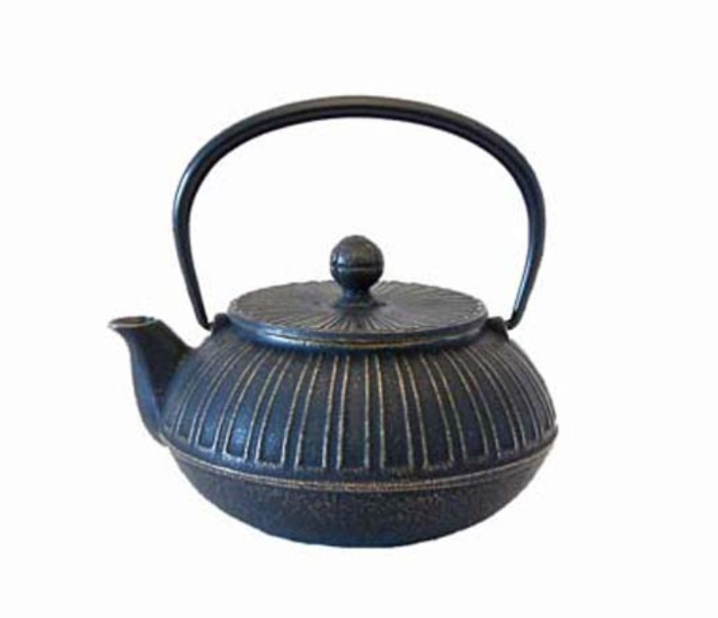
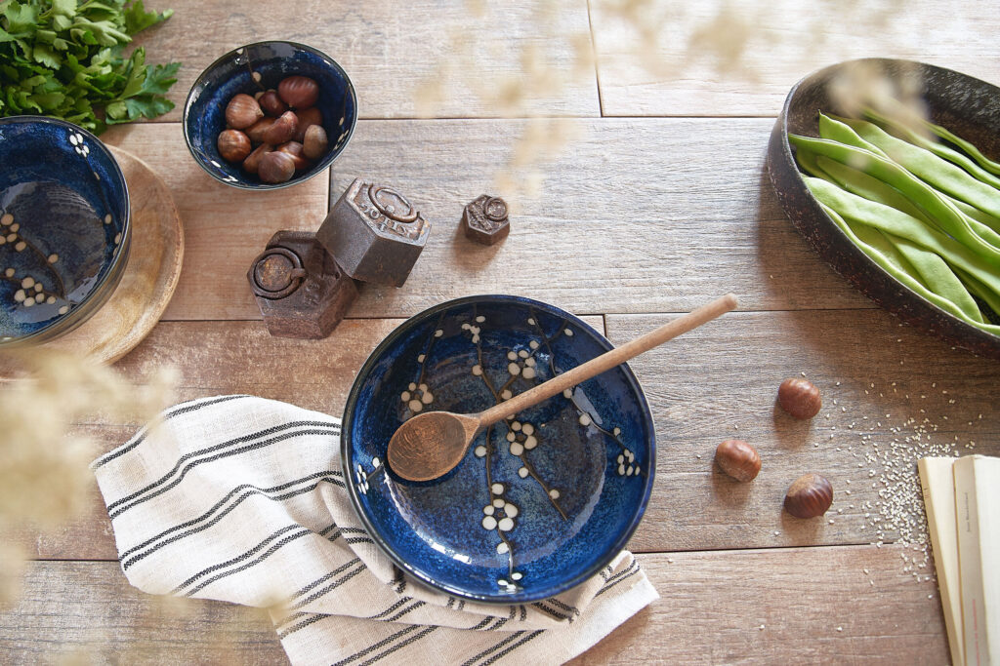
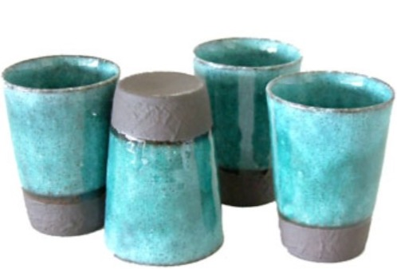
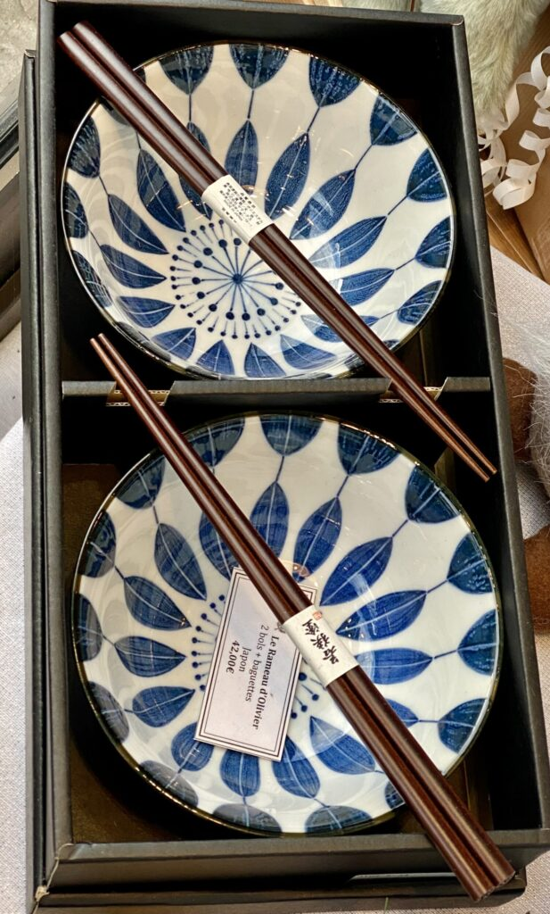
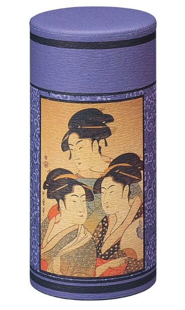
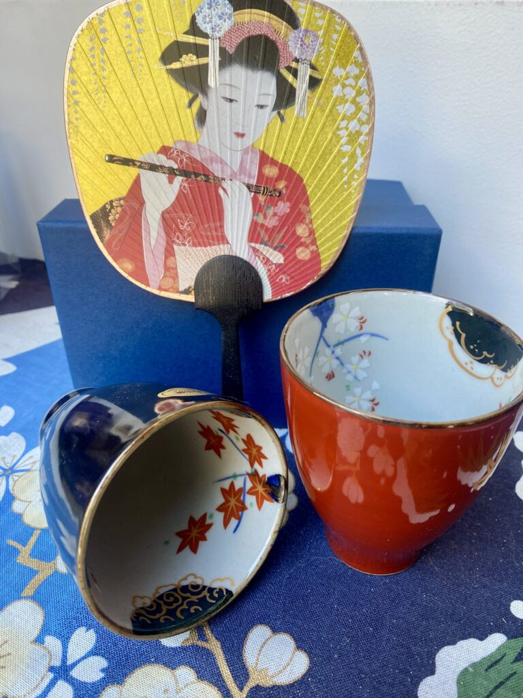
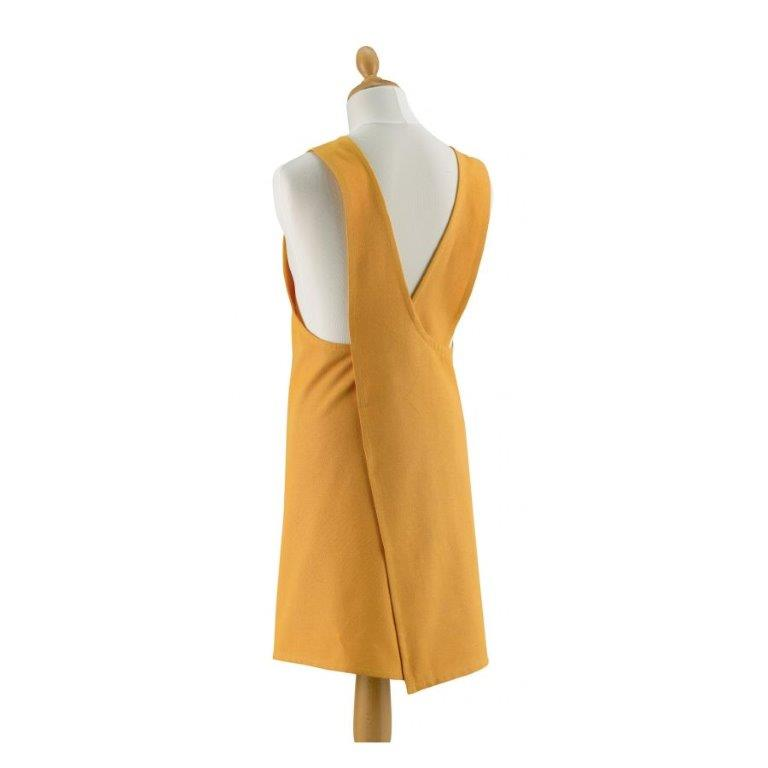
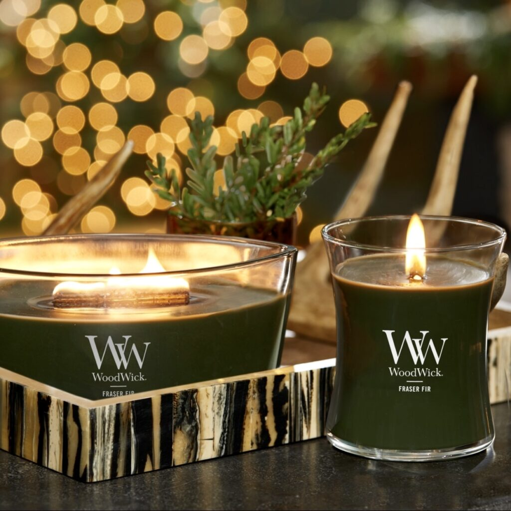

Théière émaillée en fonte
Théière en fonte de fabrication japonaise émaillée à l’intérieur contenant un filtre en inox. Existe en différentes contenances, motifs et coloris.
Art de la table japonais & bougies
Nous travaillons depuis très longtemps avec un importateur de vaisselle japonaise, qui revoit régulièrement son offre pour notre plus grand plaisir. Découvrez des bols pour le thé qu’il est facile de détourner pour nos apéritifs, nos soupes, nos entrées ou nos desserts ! Nous proposons également des baguettes japonaises, théières, tasses à thé ou café, couteaux, tabliers… Et depuis peu, nous avons eu un vrai coup de coeur pour les parfums gourmands et envoûtants des bougies Woodwick®.


Théière en fonte de fabrication japonaise émaillée à l’intérieur contenant un filtre en inox. Existe en différentes contenances, motifs et coloris.

Set de 4 tasses en grès émaillé à utiliser au choix pour le thé ou le café. Existe en coloris turquoise, bleu ou blanc

Ce set comprend 2 bols élégants bleu et blanc en porcelaine japonaise. Chaque bol est accompagné d’une paire de baguettes en bois laqué vous permettant de savourer vos plats japonais préférés avec authenticité.
Fabriqués au Japon, ces bols au décor de branches et fleurs de cerisiers allient l’art traditionnel japonais avec un design contemporain et raffiné. Ils sont disponibles en 4 dimensions, du petit bol au grand saladeier. Nous proposons également le plat à sushis assorti.

Boîte à thé 200 grs en fer blanc recouvert d’un joli papier traditionnel Washi. Un double couvercle permet d’assurer une protection supplémentaire contre l’air et l’humidité pour une bonne conservation du thé. Disponible dans différents décors.

Duo de 2 tasses à thé rouge et noire en porcelaine avec un très joli motif intérieur peint à la main symbolisant les 4 saisons. Fabriqué artisanalement dans la province d’Arita.

Le tablier japonais est différent des tabliers traditionnels : grâce à ses bretelles croisées et cousues dans le dos, plus besoin de faire de nœud, il faut juste l’enfiler comme une tunique. Sa fermeture portefeuille à l’arrière garantit une protection optimale et un tablier toujours ajusté. Existe en coloris jaune, gris ou ficelle.

Et si vous pouviez redécouvrir vos sens avec les Bougies WoodWick ® : avec un design très épuré et une mèche en bois, les bougies WoodWick ® vont venir remplir votre intérieur d’un doux crépitement et de parfums chaleureux. Venez découvrir les parfums en boutique. Disponible en modèle petit sablier et ellipse.